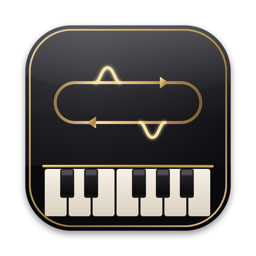
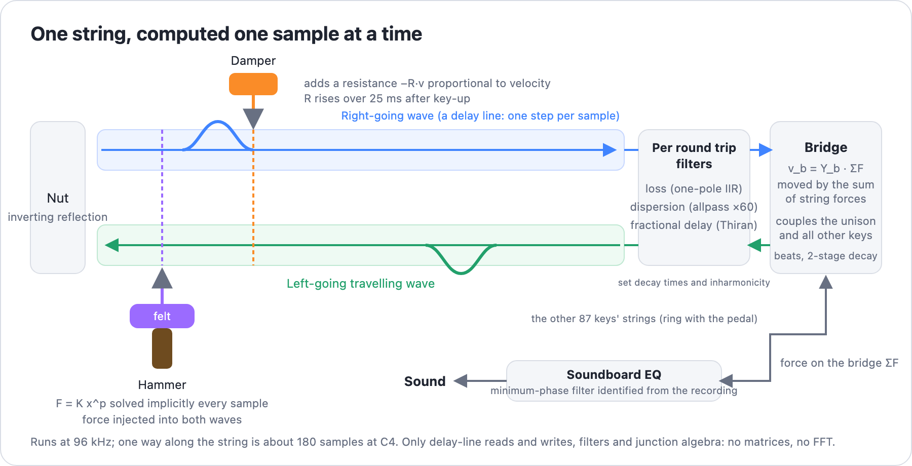

mathsound
A physical-model piano, compared with the Salamander Grand Piano recordings. Source on GitHub
Every clip plays the recording first, then 0.5 s of silence, then the model. Use headphones or speakers that reach below 100 Hz; phone speakers hide most of the difference.
Strike, piano (v4)
Salamander C4 v4, then the model at the same hammer velocity.
Strike, mezzo-forte (v8)
Salamander C4 v8, then the model. This is the layer the soundboard EQ is identified from.
Strike, fortissimo (v14)
Salamander C4 v14, then the model. The model is still about 7 dB short above 4 kHz here.
Release
What the SFZ plays on key-up (the note with a 1 s release plus the release sample), then the model's dampers. The model has no damper-landing noise.
Pedal resonance
Salamander's resonance sample (pedal down, struck strings stopped by hand), then the model's sympathetic strings in the same situation.
Pedal off, then on
Model only: the same strike without the sustain pedal, then with it.
